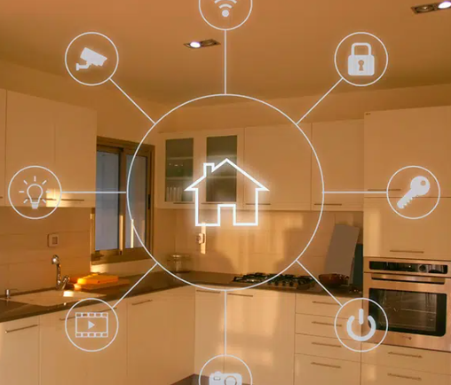

- Conexión constante a la red: es su mayor ventaja, porque le otorga acceso constante a todo lo que en Internet está disponible.
- Aumento de eficiencia y productividad: Gracias al IoT se pueden ejecutar múltiples tareas de una manera cómoda, rápida y eficiente, aumentando la productividad.
- Automatización de procesos: facilita la realización de tareas sin necesidad de la intervención humana.
- Comunicación con el entorno cotidiano: a través del IoT la información se convierte en acción inmediata, permitiendo ejecutar actividades del día a día —como abrir puertas desde el teléfono móvil o recibir información útil según la geolocalización del usuario, por ejemplo, sobre accidentes o atascos
